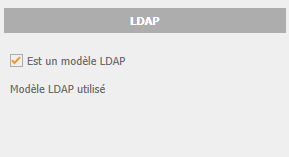
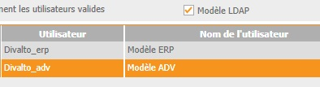

L'interface LDAP nécessite la création de modèles d'utilisateurs dans l'ERP Divalto.
Un modèle est un utilisateur comme un autre, à ceci près qu'il ne peut pas être utilisé pour exécuter l'ERP.
Pour indiquer qu'un utilisateur doit servir de modèle, cochez la case "Est un modèle LDAP" dans la fiche utilisateur du zoom des utilisateurs communs de l'ERP :

Le cas échéant, le champ en affichage "Modèle LDAP utilisé" précise, pour un utilisateur normal, le modèle qui lui a été appliqué lors d'un import ou d'une synchronisation.
Le zoom des utilisateurs dispose d'un filtre (case à cocher "Modèle LDAP") permettant de n'afficher que les modèles :
